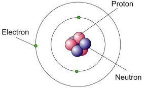

 introduccion al tema 2
11/10/22
Contexto
Se considera que la Cuántica nació en 1900 cuando el físico alemán Max Planck presentó su trabajo, La teoría de la ley de distribución de energías del espectro normal, el cual sería precursor de una revolución en la Física. En este trabajo decía que la materia sólo puede emitir o absorber energía en pequeñas unidades discretas llamadas cuantos e introdujo una constante universal de gran importancia:la constante de Planck.
a pesar de esto la Física Cuántica no se desarrollaría hasta un cuarto de siglo después con la mecánica cuántica moderna (las bases matemáticas) creada por Schrödinger, Heisenberg, Dirac y de Broglie.Desarrollo
En 1900, el físico alemán Max Planck abrió la puerta al mundo de la física cuántica con su teoría sobre los cuerpos negros y la radiación, conocida posteriormente como Ley de Planck. En homenaje a Mario Molina, Premio Nobel de Química 1995, reconocidos especialistas dialogarán en torno a los orígenes de la cuántica.
Motivación
Lo que me motiva de hablar sobre este tema es que con este articulo la gente pueda saber de donde se origina la fisica cuantica, un tema que a mi me gusta muchisimo, y que asi se puedan ir adentrando a este mundo de lo minusclulo y de lo molecular, para que de grande haya más scientifcos que trabajen en estos temas, y logren descubrir cosas muy interesantes


 Sitios oficiales ejemplo
Sitios oficiales ejemplo